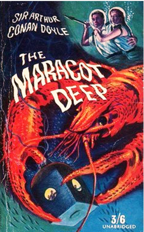

Подводные города будущего. Как и зачем нам заселять океан
Без еды человек может прожить месяц, без воды — неделю, а без воздуха — несколько минут. По крайней мере, так нас учат в школе. Пессимисты-футурологи утверждают иначе: мол, скоро в погоне за лакомым кусочком еды человек сможет жить без воздуха всю жизнь, а без воды не протянет и дня. Если в атмосфере будет растворена вся таблица Менделеева, находиться на улице станет, мягко говоря, неуютно. Наиболее логичное в данной ситуации действие — закопаться поглубже — вовсе не становится самым разумным. Технологии завтрашнего дня позволят людям без особого риска селиться под водой — поближе к рыбным деликатесам и нефти.
По просьбам наших читателей мы спускаемся на дно морское — туда, где, если верить некоторым учёным и фантастам, будут обитать наши потомки. Но стоит ли лезть в воду, не зная броду? Давайте разберёмся — как именно будет выглядеть быт акванавтов и есть ли смысл в жизни под волнами.
Зачем жить под водой
Карта океанских глубин. Фотосинтез, дающий наибольшее разнообразие жизни, происходит на глубинах до 200 метров. Всё, что глубже, — «сумеречная зона».
Почему, собственно, человечеству придётся уйти с суши под воду? Мировой океан покрывает около 70% планеты, и может быть идеальным решением проблемы с перенаселением. Если технологии ещё не позволяют людям эмигрировать на другие планеты, но дают возможность строить недорогие и надёжные подводные города, то почему бы кое-кому не прописаться на старых добрых «семи футах под килем»?
Теории о неких катастрофах (загрязнении воздуха, вирусных эпидемиях, атомных войнах и т. п.) не выдерживают никакой критики. Они автоматически исключают проблемы с перенаселением — ведь при событиях такого масштаба часть человечества неизбежно погибнет. Зачем тогда выжившим прятаться в воду — среду опасную и враждебную для большинства млекопитающих?
В «Маракотовой бездне» Конана Дойля жители Атлантиды, предвидевшие гибель своей страны, построили Храм Безопасности — нечто вроде бомбоубежища из игры Fallout, непроницаемого для воды. Когда их материк ушёл на дно, они продолжали жить в Храме около восьми тысяч лет — причём, имея самые передовые технологии, даже и не помышляли о возвращении на поверхность.
Загрязнение атмосферы? Но позвольте — ведь из воздуха зараза попадёт и в воду! Не проще ли защищаться от кислотных дождей на суше, чем плавать в море кислоты? От радиации, вирусов или нашествия инопланетян легче скрываться под землёй, однако в долгосрочной перспективе подземные убежища неудобны. Люди становятся зависимы от источников воды и ограничены в передвижении (только по заранее проложенным тоннелям либо с помощью «подземных лодок», скорость которых традиционно невелика), что, в свою очередь, затрудняет разработку полезных ископаемых и резко увеличивает уязвимость перед внешними угрозами.
Разумнее всего жить под землёй, а передвигаться по её поверхности. Это подходит почти для всех сценариев Апокалипсиса. Даже капитан Немо с его «Наутилусом», способным плавать автономно многие годы, организовал себе базу не на дне, а под уединённым вулканическим островом.
«Капитан Немо и подводный город» (1969) — киносиквел известного романа. Оказывается, Немо построил ещё и Темплемер — подводный город-утопию
Так почему же фантасты стремятся отправить людей под воду? Животная биомасса океана превышает биомассу суши примерно в 30 раз (основной объём сухопутной жизни занимают растения). Толщина земной коры здесь значительно меньше, чем на материках, что даёт доступ к несметным сокровищам — от нефтегазовых полей до месторождений металлов. Наконец, на дне находятся солидные запасы гидрата метана — «энергоносителя будущего».
Именно из этих соображений исходили создатели игровой серии Archimedean Dynasty/AquaNox (1996—2003) — пожалуй, самых известных фантастических «подводных симуляторов». Их сюжетная концепция такова: к концу 21 века запасы полезных ископаемых на суше истощились. Люди стали активно осваивать океан. Усиливающаяся конкуренция за ресурсы привела сначала к локальным конфликтам, а потом — к глобальной ядерной войне. Последовавшая за ней ядерная зима сделала сушу непригодной для обитания. К 27 веку остатки человечества перебрались под воду.
Дары моря
Коммерция — двигатель прогресса. В наше время большинство технологических прорывов делается не в закрытых правительственных институтах, а в лабораториях транснациональных корпораций. Если частные полёты в космос начнут приносить прибыль, мы с вами будем проводить отпуска на Луне. Если ставить нефтяные вышки на дне морском окажется выгоднее, чем в пустыне, — готовьтесь к погружению.
Отправной точкой в технологии создания подводных фабрик могут стать современные нефтегазовые платформы. Пальма первенства здесь принадлежит нашей стране — вернее, Советскому Союзу, который начал строить город-остров «Нефтяные камни» (Каспийское море, 110 км от Баку) в 1948 году.
Сейчас эта платформа — если её так можно назвать — представляет собой сеть обветшавших эстакад (для движения транспорта открыто только 50 км дорог), посёлок с 2-, 3-, 9- и 16-этажными домами, электростанцией, котельной, магазинами, больницей, аптекой, столовой, общежитием, гостиницей, клубом, хлебозаводом, лимонадным цехом, детским садом, библиотекой и футбольным полем.
Нефтяные Камни возле Баку (фото: Bruno Girin, CC BY-SA 2.0)
Другие добывающие платформы имеют гораздо более скромные размеры, хотя им принадлежит несколько «самых-самых» рекордов. Например, платформа «Петроний» в Мексиканском заливе считается самой высокой структурой, возведённой человеком. Этот монстр возвышается над водой на 75 метров, а длина его бетонных «ног» составляет 534 метра.
Для нефтегазовых платформ максимальная глубина рентабельности составляет порядка 2 километров. Нефть постоянно дорожает, поэтому, в теории, однажды может наступить момент, когда увеличивать длину опор станет дороже, чем обеспечивать герметичность «жилой» зоны, и платформы уйдут под воду. Так появятся первые настоящие «подводные города» — вначале рассчитанные лишь на посменную работу (как и в случае с некоторыми современными платформами, жилые зоны могут располагаться отдельно от добывающих), а впоследствии, возможно, и на постоянное проживание людей.
Уникальный инструмент исследования океана — платформа FLIP. Судно, затопляемое вертикально. Почти сто метров под водой, 17 — на поверхности (фото: U.S. Navy/John F. Williams)
Как могут выглядеть подводные города?
Представьте себе современную подводную лодку, рассчитанную на многомесячное плавание в погружённом состоянии. Казалось бы: убери оружие с двигателями, добавь бытовых удобств, закрепи её на грунте — и дело в шляпе? Увы, всё гораздо сложнее.
Почти все отечественные подлодки имеют двойной корпус (в отличие от американских, щеголяющих в одной «рубашке») — внешний, «мягкий», придающий лодке обтекаемую форму, и внутренний, рассчитанный на сопротивление чудовищному давлению. Российская конструкция гораздо более затратная, однако она снижает шумы лодки, позволяет устанавливать часть оборудования между корпусами (экономя место в отсеках) и защищает внутренний корпус от некоторых воздействий — например, когда субмарина пробивает, вернее продавливает лёд. Проект 705 «Лира» и К-278 «Комсомолец» погружались на глубину свыше 1 километра (правда, жёсткий корпус после этого приходилось чинить).
Нужно ли всё это подводному городу? И да, и нет. Российские подлодки успешно «ныряли» на 1000 метров (а по слухам, и на все 1300), однако могли пребывать там очень недолго. Попытки сделать субмарину более «глубоководной» неизбежно превращают её в батискаф.
Город Ото Гунга из «Звёздных войн». Силовые поля создают дома — «пузыри» (© Lucasfilm)
Действительно, подводному жилищу не нужны обтекаемые формы. Жёсткие корпуса подлодок имеют круглое сечение (благодаря которому вода сжимает их равномерно, а не продавливает в отдельных местах), однако сферическая форма гондолы батискафа распределяет давление ещё более эффективно.
Второй, мягкий корпус пригодился бы подводному дому для защиты от самых разных воздействий (столкновений с плавательными аппаратами, падения «мусора» сверху, аварий на трубопроводах и т. д.), но на практике дешевле будет возвести вокруг дома прочный сеточный каркас.
Таким образом, идеальный подводный дом — это шар. Для сохранения жёсткости корпуса вместо иллюминаторов лучше всего использовать телекамеры. С ролью причала отлично справится старый добрый «подводный колокол», доработанный для использования на больших глубинах.
В романе «Подводный город» Фредерика Пола и Джека Уильямсона (1958) расселение человека под водой стало возможным благодаря изобретению иденита — материала, способного выдерживать любые давления. В реальности самые прочные корпуса для подводных лодок и батискафов изготавливаются из титана. В ближайшем обозримом будущем только этот металл сможет стать «строительным кирпичом» для подводных городов. Примечательно также, что россыпные месторождения титана находятся в береговых зонах.
Надёжность такого «дома» зависит от того, насколько точно соблюдена его сферическая форма. Отклонение кривизны поверхности на несколько сантиметров увеличит давление в этой точке на 30%. Так как речь идёт о давлениях около тонны на квадратный сантиметр, производство глубоководных аппаратов стоит огромных денег (цена высококлассных подлодок исчисляется миллиардами долларов). Для сравнения — предполагаемая стоимость облёта Луны «космическим туристом» на корабле «Союз» составляет около 100 миллионов долларов с человека (по оценке компании Space Adventures).
Возникает вопрос — неужели постройка глубоководных городов будет коммерчески оправданной? Если речь идёт о глубинах свыше одного километра, то в ближайшие 10—20 лет ответ один — нет. В 1960 году швейцарско-американский батискаф «Триест» покорил глубину в 10916 метров (Марианская впадина), однако акванавты провели на дне всего 12 минут. За прошедшие 47 лет не было создано ни одного аппарата, способного повторить данный рекорд.
Насколько глубоко?
Акваланг позволяет человеку погружаться на глубину не более 313 метров (рекорд 2003 года), жёсткий скафандр увеличивает её примерно вдвое. Мировой рекорд погружения без акваланга составляет 183 метра (30 июня 2005 года бельгиец Патрик Мусиму нырнул около Хургады на 209 метров — правда, по собственной методике, без официального судейства). На такой глубине каждый сантиметр тела испытывает давление около 20 кг. Лёгкие сжимаются до размеров яблока, пульс снижается, кровь из лёгких попадает в горло, лопаются плохо запломбированные зубы. Но это ещё не предел. Испанские учёные смоделировали погружение в барокамере — добровольцы выдержали «глубину» в 705 метров.
Космическая станция может обойтись дешевле, чем подводный город. Да и стоит ли нам стремиться вглубь? Расположение домов и коммуникаций на скальном грунте нельзя назвать безопасным. Мы ещё очень мало знаем о геологии дна Мирового океана, но даже малейший сдвиг его поверхности может привести к катастрофическим последствиям для подводного города.
В этом смысле самый крупный океан планеты — Тихий — мало пригоден для «придонной» колонизации, ведь вдоль Австралии, восточного побережья Азии и западного берега обеих Америк расположено так называемое «Огненное кольцо» — зона, где происходит до 90% сильнейших землетрясений планеты.
Тихоокеанское огненное кольцо. Если люди и будут заселять океан, то здесь — в последнюю очередь
Ах, сударь, оставайтесь тут, живите в лоне морей! Тут, единственно тут настоящая независимость! Тут нет тиранов! Тут я свободен!
Капитан Немо (Жюль Верн, «Двадцать тысяч лье под водой»)